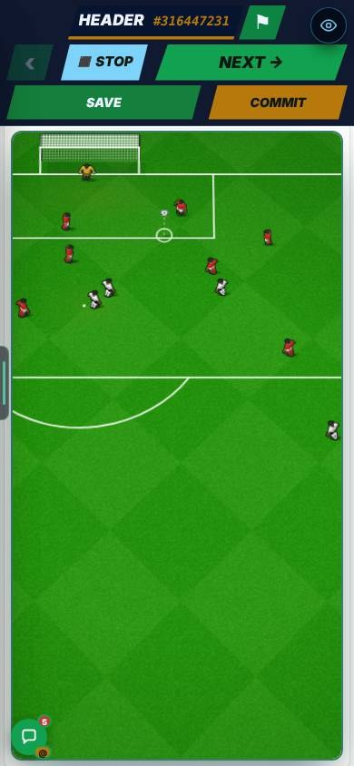
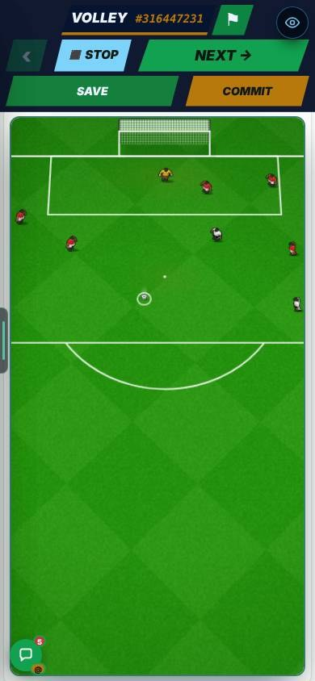
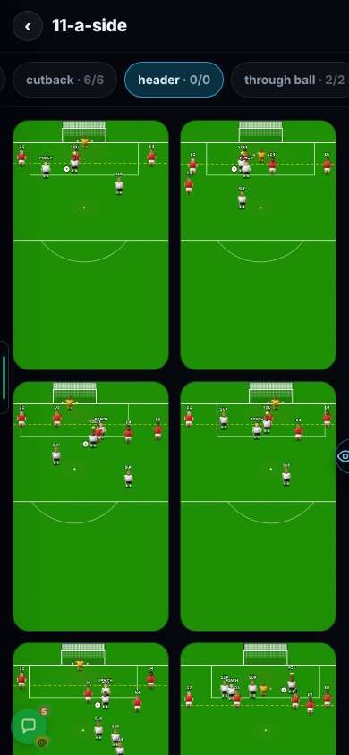
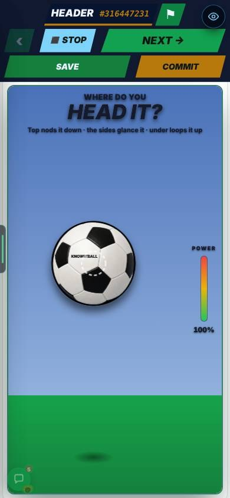
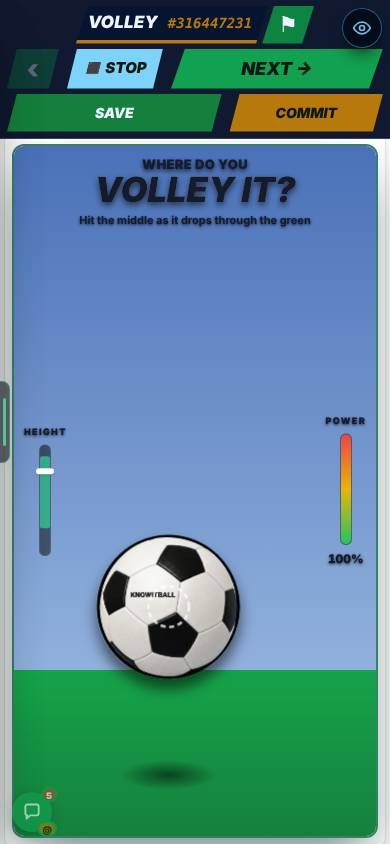
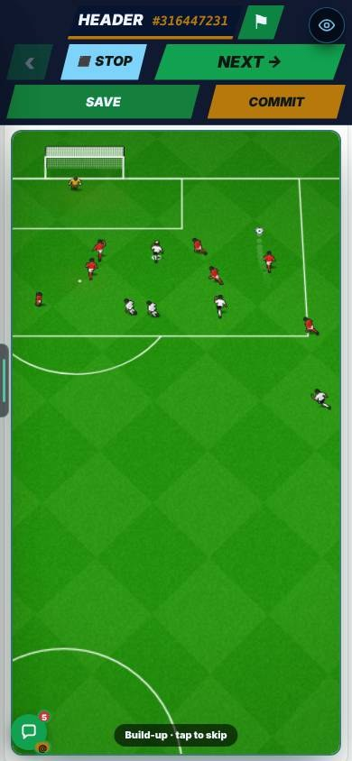
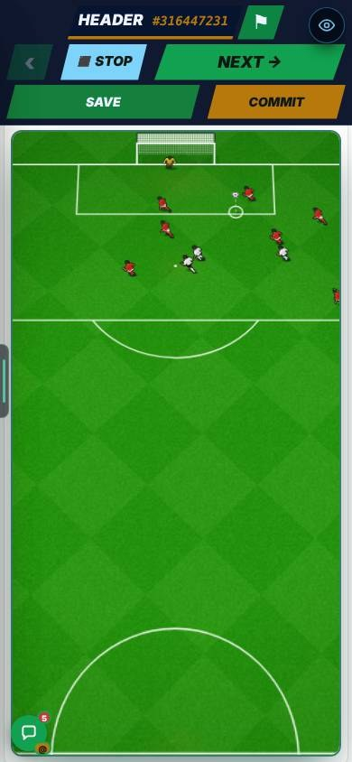
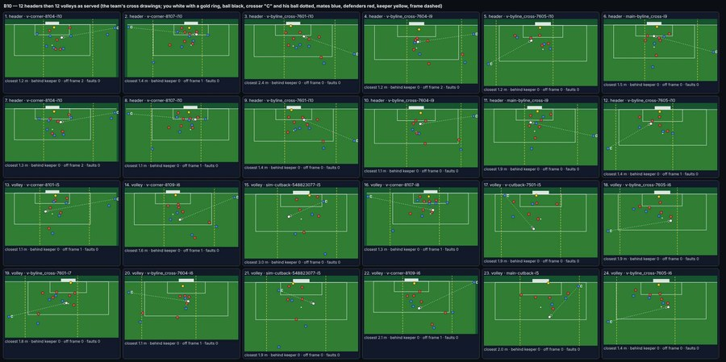

On the Harry branch, not live yet.
Overnight round, 20 Oct 2026. They had been switched off since 24 Sep. In Admin → Patch notes this is v0.88.
Header and volley chances were switched off (24 Sep). You never played one.
No header or volley drawings exist: 0 of 194 committed, 0 of 192 saved. The game plays a chance from its drawings.
Each one is played as the end of one of the team’s own cross drawings. You are the man at the target. The wide man is the crosser. The “switched off” list is now empty. When the team saves 5 drawings of one kind, the real drawings take over.



A header and a volley are not kicked from the ground.
The ball is in the air when you hit it.
The ball is in the air while you aim. A header ball hangs at 1.85 m. A volley ball bounces between 0 and 0.95 m. Both show a shadow and a dotted line. After the strike you get a verdict, from NODDED DOWN to SKIED.


A header needs a cross before it.
A header is the end of a cross drawing, so the moves before it have to end in a cross.
With Full highlights rebuild: On, the last pass is now the crosser’s lofted ball. It peaks between 3 and 4.6 m. 60 of 60 were made and 59 pass their own checks.


Look for: the build-up, the cross, then your aim arrow, then the result. This one ends in BLOCKED. 6 seconds, on a phone screen.
With headers and volleys off, you got none a match.
Each open-play kind is now 1 chance in 10 (it was 1 in 8). The Kane mix is untouched. Measured over 40 matches each:
Chances a match: 6.0 in the even mix and 6.0 with the rebuild On.
Skill hardly counted. A poor finisher scored 42.8% of headers and an elite one 50.2%. Volleys went the wrong way: poor 37.4%, elite 33.6%.
More shots are now blocked, most likely because the drawn boxes are crowded (reasoned, not tested). Headers blocked 18–21% → 36–42%. Volleys 13–15% → about 35%.
Poor, average and elite finishers (500 shots each). An elite finisher now beats a poor one in both. All other chance kinds are identical.
Goals from 500 shots per row, before → after.

The core engine file (sensitive) is untouched. The match file (sensitive) changed in two ways: it draws the airborne ball while you aim, and a header or volley chance is always struck from the air. Two test fingerprints (the keeper one and the chance-judge Old one) were re-pinned on purpose. The pitch is 366 px wide on a phone.
It was seen only in Infinite Highlights, at 390 × 844.
The pictures and the clip come from the test page.
Play a career match and look for a header and a volley.
Three older suites fail: chanceMaker counts, longRangeRules and match2dCam (372 × 704).
They fail the same way without this build.
Not touched here.
No drawings yet. 0 of 194 committed and 0 of 192 saved are headers or volleys.
Aim. Header ball hangs at 1.85 m. Volley ball bounces 0 to 0.95 m. Off-centre header: up to 22° and −35% pace. Volley slice: up to 26°.
Per match, 40 matches each. Even mix: headers 0.50, volleys 0.42, chances 6.0. Rebuild On: 0.57, 0.63, 6.0. Each open-play kind 1 in 10 (was 1 in 8).
Build-ups. Cross peaks at 3 to 4.6 m. 60 of 60 made, 59 pass their own checks.
Goals from 500 shots per cell (poor / average / elite). Header 42.8 / 46.2 / 50.2% → 23.4 / 29.2 / 35.8%. Volley 37.4 / 40.6 / 33.6% → 23.0 / 28.4 / 35.4%. Blocked: headers 18–21% → 36–42%, volleys 13–15% → about 35%.
Pitch width. 366 px on a phone. 489 px at 1280 px wide. The audit says 493 at its own window (reasoned, not measured here).
Tests. A new suite, airChances. Keeper fingerprint d2725947 and chance-judge Old 239:e7c688f6 re-pinned on purpose.
Planned, not built. Flair and bicycle kicks. The plan is docs/plans/2026-10-20-flair-bicycle.md.
A header from a build-up. 6 seconds, on a phone screen. It is under “Headers start from a cross in the build-up” above.